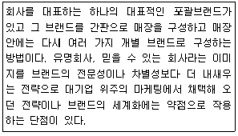
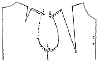

패션머천다이징산업기사 (2012-03-04 기출문제)
1과목: 패션마케팅
1. 손익분기점(break-even point)의 의미로 가장 옳은 것은?
- 순이익이 0이 되는 점의 매출액
- 매출이 일어나는 점
- 목표이익을 넘어가는 점의 매출액
- 고정비를 넘어가는 점의 매출액
(정답률: 알수없음)

2. 다음 중 머천다이저가 반드시 갖추어야 할 자질이 아닌 것은?
- 풍부한 상품지식
- 계획적인 조직능력
- 계수관념
- 일러스트 능력
(정답률: 알수없음)
3. 시장 표적화 전략 중 자사의 독특한 이미지를 부각하기 위해 브랜드 이미지, 광고, 디자인 등 부가가치적 측면을 강조하는 것은?
- 차별화 전략
- 비차별화 전략
- 시장세분화 전략
- 집중화 전략
(정답률: 알수없음)
4. 비슷한 컨셉의 경쟁 브랜드들을 함께 입점시키는 브랜드 토탈형 복합 패션전문점은?
- 사입형 패션전문점
- 제조소매업
- 메이커 토탈샵
- 멀티브랜드 전문점
(정답률: 알수없음)
5. 리테일 머천다이저의 업무가 아닌 것은?
- 기획활동
- 사입활동
- 판매활동
- 생산활동
(정답률: 알수없음)
6. 어패럴 머천다이저의 역할이 아닌 것은?
- 정보 분석 업무
- 상품기획 업무
- 판매 및 판매촉진 지원 업무
- 색체에 관한 모든 업무
(정답률: 알수없음)
7. 마케팅 믹스의 4P's 요소가 옳게 나열된 것은?
- 디자인개발, 유통, 제품, 촉진
- 제품, 가격, 인적판매, 촉진
- 촉진, 디자인개발, 유통, 제품믹스
- 제품, 촉진, 가격, 유통
(정답률: 알수없음)
8. 구매행동의 영향요인에 대한 설명으로 틀린 것은?
- 준거집단의 영향력이 클 때 관여 수준이 낮아진다.
- 구매 관여 수준은 소비자의 구매의사결정에 많은 영향을 미친다.
- 상표 관여 수준이 높으면 구매 관여 수준도 높아진다.
- 구매 관여란 소비자가 특정제품의 구매에 부여하는 관심의 정도를 말한다.
(정답률: 알수없음)
9. 소비자들이 외부로부터 다양한 정보를 획득하는 방법에 대한 설명 중 틀린 것은?
- 개인적 정보원천으로는 가족, 친구, 이웃, 친지 등이 있고 상업적 정보원천으로는 광고, 판촉사원, 중간상, 포장, 진열 등이 있다.
- 공공적 정보원천으로는 신문ㆍ잡지의 기사나 방송의 뉴스 등이 있고, 경험적 정보원천으로는 시험구매, 제품의 직접 사용 등이 있다.
- 일반적으로 소비자들은 제품의 주관적 평가 및 사용경험을 전달하는 개인적 정보를 자사제품의 이점만을 제공하는 상업적 정보원천보다 더 신뢰한다.
- 정보원천의 영향력은 제품과 소비자의 직업 등의 특성에 따라 똑같게 나타나는 특성이 있다.
(정답률: 알수없음)
10. 다음 중 기업의 영업부서에서 입안하는 예산항목이 아닌 것은?
- 판매 예산
- 구매ㆍ재고 예산
- 판매경비 예산
- 상품기획부문 예산
(정답률: 알수없음)
11. 브랜드 전략 종 보기의 설명에 해당하는 것은?

- 스토아 브랜드 전략
- 유통업자 브랜드 전략
- 패밀리 브랜드 전략
- 개별 브랜드 전략
(정답률: 알수없음)
12. 소재를 선택할 때 고려할 조건이 아닌 것은?
- 디자이너의 선호도
- 디자인과의 적합성
- 기능과의 적합성
- 원가의 타당성
(정답률: 알수없음)
13. 의류상품의 분류 중 TPO별 분류는 마케팅에의 적용가능성이 가장 높은 것으로 판단된다. 이 때 TPO는 무엇의 약자인가?
- Time, Place, Occasion
- Time, Price, Occasion
- Target, Place, Occasion
- Target, Price, Occasion
(정답률: 알수없음)
14. 가격결정의 방법 중 판매업자의 마진(magin)과 리베이트(rebate), 소비자에 대한 서비스 상황 및 품질분석 등의 요인을 종합적으로 결정하는 방법은?
- 원가 기준 가격결정법
- 수요 기준 가격결정법
- 경쟁 기준 가격결정법
- 공급 기준 가격결정법
(정답률: 알수없음)
15. 가격결정 방법에 대한 설명 중 틀린 것은?
- 원가중심 가격결정은 제품의 수요가 한정되어 있어 탄력성이 낮거나 경쟁자가 없어 이를 고려할 필요가 없는 경우에 사용되는 방법이다.
- 구매자중심 가격결정은 가격설정이 간단하며 생산자에게는 안전한 이익이 보장되는 방법이다.
- 경쟁사중심 가격결정은 같은 제품을 판매하고 있는 다른 경쟁회사의 경쟁할 것을 고려하여 가격을 결정하는 방법이다.
- 통합적 가격결정은 실제 기업이 가격을 결정할 때 원가, 수요, 경쟁에 기초한 가격결정의 세 가지 측면을 모두 고려하는 방법이다.
(정답률: 알수없음)
16. 표적시장에서 기업이 사용하는 다양한 마케팅 수단들의 집합에 해당되는 것은?
- 마케팅믹스
- 제품서비스
- 촉진
- 광고
(정답률: 알수없음)
17. 소비자 행동을 조사하기 위하여 표적고객의 라이프스타일에 대한 주요 조사 항목이 아닌 것은?
- 욕구(needs)
- 활동(activity)
- 관심(interest)
- 의견(opinion)
(정답률: 알수없음)
18. 제품 믹스의 차원 중 각 제품계열에 포함되는 품목의 총 수에 해당되는 것은?
- 제품 믹스의 폭
- 제품 믹스의 길이
- 제품 믹스의 깊이
- 제품 믹스의 일관성
(정답률: 알수없음)
19. 패션 기업의 관계마케팅(relationship marketing)에 대한 설명으로 옳은 것은?
- 새로운 고객 창출에 초점을 맞추고 있다.
- 고객의 생애가치를 극대화하고자 하는 경영방식으로 정의된다.
- 소비자에게 통합된 총체적 경험을 제공하기 위한 기업의 마케팅 노력이다.
- 기업 간 상호협력을 기초로 이루어진다.
(정답률: 알수없음)
20. 다음 중 디스플레이를 전개하는 수단에 해당되지 않는 것은?
- 조명
- 상품
- 소도구
- 이벤트
(정답률: 알수없음)
2과목: 패션소재기획
21. 편직 소재 중 원단의 표면에 루프(loop)가 나와 있는 소재는?
- 하이 파일(high pile)
- 테리(terry)
- 벨루어(velour)
- 인타시아(intarsia)
(정답률: 알수없음)
22. 다음 중 자카드 직기로 제작된 대표적인 직물은?
- 피케(pique)
- 버즈아이(bird's eyes)
- 다마스크(damask)
- 와플 클로스(waffle cloth)
(정답률: 알수없음)
23. 의류 소재의 쾌적성 중 기공을 통해 공기가 투과할 수 있는 성능을 말하며, 보온성이나 투습성에 큰 영향을 미치는 것은?
- 흡습성
- 흡수성
- 통기성
- 비중
(정답률: 알수없음)
24. 다음 중 비중이 가장 작은 섬유는?
- 비스코스레이온
- 아마
- 면
- 폴리프로필렌
(정답률: 알수없음)
25. 다음 중 의류업체의 소재기획 과정으로 옳은 것은?
- 정보수집→이미지 맵/컬러 맵 작성→소재 맵 작성→스타일 개발→발주→의류생산→출하
- 정보수집→소재 맵 작성→이미지 맵/컬러 맵 작성→스타일 개발→발주→의류생산→출하
- 정보수집→이미지 맵/컬러 맵 작성→소재 맵 작성→스타일 개발→의류생산→발주→출하
- 정보수집→소재 맵 작성→이미지 맵/컬러 맵 작성→발주→스타일 개발→의류생산→출하
(정답률: 알수없음)
26. 직물 컨버터(converter)에 대한 설명으로 틀린 것은?
- 해외에서 생산되는 특색이 있는 소재들을 수입하여 판매하기도 한다.
- 패션 소재의 흐름은 직물 컨버터→직물 업체→의류 업체 순서이다.
- 염색이나 가공이 안 된 생지를 구매해서 염색 및 가공하여 판매하는 업체이다.
- 유행이나 색체의 경향을 분석하여 소비자의 요구에 알맞은 직물을 만들어내는 전문회사이다.
(정답률: 알수없음)
27. 카딩(carding)이 끝난 섬유를 다시 나란히 재배열하고 불순물을 제거하며 짧은 섬유를 제거하는 공정을 마친 실은?
- 코마사
- 카드사
- 교합사
- 복합사
(정답률: 알수없음)
28. 다음 중 소재기획의 특성으로 틀린 것은?
- 소재기획 단계에서 최종 제품의 사용 용도는 기본적인 기획의 방향을 제한하거나 제시한다.
- 소재는 제품을 만들기 위한 중간재이므로, 소재기획단계에서 최종 제품의 특성을 고려하지 않아도 된다.
- 대량생산 제품은 소재기획 시기와 최종 제품의 판매 시기의 차이가 크다고 볼 수 있다.
- 성공적인 소재기획을 위해서는 디자인, 기술, 마케팅 등의 부분들이 서로 통합적으로 작용하여야 한다.
(정답률: 알수없음)
29. 워싱(washing) 제품의 특징으로 틀린 것은?
- 자연스러운 표면
- 표면의 광택 증가
- 수축에 의한 방축
- 패션성이 있는 소재
(정답률: 알수없음)
30. 현대 패션이미지를 나타내는 내추럴 이미지를 표현하기에 적합한 신소재는?
- 스톤워시 가공 소재
- 타탄 체크 소재
- 코팅된 헤링본 소재
- 플라스틱과 같은 반투명한 소재
(정답률: 알수없음)
31. 다음 섬유 중 현미경으로 관찰한 단면 형태가 원형이 아닌 것은?
- 비스코스레이온
- 구리암모늄레이온
- 폴리노직레이온
- 나일론
(정답률: 알수없음)
32. 유해 세균으로부터 피부를 보호하며 청결하고 쾌적한 생활을 위해 항균, 방취 등의 위생가공한 의류 및 섬유제품 기타 공산품류에 부여하는 품질보증 마크는?
- 골드 다운(gold down) 마크
- 굿헬스(good health) 마크
- 우수제품 마크
- 무포르말린(free formalin) 마크
(정답률: 알수없음)
33. 직물의 경사와 위사의 일반적인 판별법으로 틀린 것은?
- 직물의 밀도가 많은 방향이 경사이다.
- 직물에 변사가 있을 때 변사의 방향이 경사이다.
- 교직물인 경우 강력이 큰 방향이 경사이다.
- 단사와 합연사의 교직은 단사방향이 경사이다.
(정답률: 알수없음)
34. 자연과 문화의 융합으로 자연환경에 오염되지 않은 오지의 민속적인 문양과 색상에 대해 분석한 패션트렌드의 테마는?
- 노스탤지어(nostalgia)
- 에스닉(ethnic)
- 글로벌(global)
- 퍼지(fuzzy)
(정답률: 알수없음)
35. 필라멘트사로 만든 직물에서 나타나는 현상이 아닌 것은?
- 광택이 있다.
- 표면이 매끈하여 찬 느낌이 있다.
- 부드러운 촉감과 포근한 느낌을 준다.
- 직물의 접촉 면적이 넓다.
(정답률: 알수없음)
36. 다음 중 땀을 잘 흡수하고 시원하며 질기면서도 비교적 실용적인 소재는?
- 견직물
- 모직물
- 면직물
- 나일론직물
(정답률: 알수없음)
37. 소재 선택에서 고려해야 할 조건 중 촉각효과를 살린 재질감과 가장 관계가 있는 것은?
- 패션 사이클의 적합성
- 용도 기능의 적합성
- 품질 안정성
- 실루엣ㆍ디자인의 적합성
(정답률: 알수없음)
38. 직물이 굴곡, 비틀림, 압축 등의 힘을 받은 후에 원래의 상태로 회복되는 성질은?
- 신도
- 레질리언스
- 강도
- 방적성
(정답률: 알수없음)
39. 최근 패션 소재에 대한 일반적인 요구 특성이 아닌 것은?
- 민족주의, 국가주의에 대한 관심
- 자연으로 회귀하고 싶은 욕망
- 편리하면서 쾌적한 여가 생활
- 인간의 본질적인 욕구인 아름다움에 대한 관심
(정답률: 알수없음)
40. 선진국에서는 자국의 환경보호와 자국민의 안전을 위해 친환경적인 방법에 의해서 생산되는 모든 제품과 저에너지 사용제품에 부여하는 품질 마크는?
- 에콜로지 마크
- 기능 마크
- 품질보증 마크
- 명품 마크
(정답률: 알수없음)
3과목: 유통관리 및 광고
41. 소비자의 욕구를 충족시키기 위하여 상품의 폭과 깊이의 균형을 조정하는 계획은?
- 판매계획
- 영업계획
- 재고계획
- 상품구성계획
(정답률: 알수없음)
42. 신규 브랜드의 ABC 본석에 대한 설명으로 틀린 것은?
- 점포의 입지에 따른 소비자의 패션 민감도를 분석한다.
- 점포별 수요량을 예측한다.
- 각 점포의 수요를 패션 민감도별로 나누어 수요량을 예측한다.
- 각 군의 수요를 곱한다.
(정답률: 알수없음)
43. 상품특성, 사용상황, 점포이미지 등을 전달하는데 유용한 디스플레이는?
- 윈도우 디스플레이
- 리모트 디스플레이
- 실내 디스플레이
- 옥외 디스플레이
(정답률: 알수없음)
44. 소매업 머천다이징의 판매활동에 해당되지 않는 것은?
- 가격정책
- 재고관리
- 생산관리
- 촉진활동
(정답률: 알수없음)
45. 점포의 이미지와 유행 테마의 통합적 표현을 하는 것으로 고객의 시점이 다소 먼 디스플레이의 상품표현 방법은?
- PP
- IP
- VP
- POP
(정답률: 알수없음)
46. 현재의 패션경향 및 시장정보, 바이어의 상품구매 계획에 가장 적당한 거래처나 메이커를 선정해 주며, 경우에 따라 상품구매를 대행해 주는 것은?
- 중앙 구매 사무소(central buying office)
- 상주 구매 사무소(resident buying office)
- 제조업 브로커(manufacturer's broker)
- 도매업자(wholesaler)
(정답률: 알수없음)
47. 다음 중 상품구성 계획의 목적이 아닌 것은?
- 시장 점유율의 유지와 통제
- 소비자의 욕구를 만족시키기 위한 다양한 상품제공
- 소비자의 욕구와 상점의 재고 능력 및 전시능력의 균형을 통한 판매촉진
- 자금 확보와 신속한 재주문 등을 통한 판매기회 손실예방
(정답률: 알수없음)
48. 디스플레이의 전개수단 중 표적고객과 상품에 따라 쉽게 변화시킬 수 있는 장점이 있어 다른 디스플레이 전개요소에 비해 상대적으로 쉽게 바뀔 수 있는 것은?
- 음악
- 소도구
- 조명
- 색상
(정답률: 알수없음)
49. 유통 관리형태 중 위탁사입제도에 해당되는 것은?
- 팔다 남은 재고는 점주가 책임을 지는 형태이다.
- 의류제조업체가 상품기획과 생산뿐만 아니라 판매에도 책임을 지는 형태이다.
- 팔다 남은 상품의 재고는 전량 의류업체가 책임을 지는 형태이다.
- 대리점은 제품을 인도받을 때 대금을 결제하고 반품이 생기게 되면 매입금액에서 공제를 하는 형태이다.
(정답률: 알수없음)
50. 광고매체에 대한 설명 중 틀린 것은?
- TV광고는 노출 도달 범위가 높으나 청중선별이 불가능하며, 높은 제작비용이 단점이다.
- 패션광고는 잡지를 효과적으로 매체로 사용하며, 재현가능성이 높고 수명이 긴 특징이 있다.
- 소비자층마다 반응을 보이는 매체가 거의 비슷하다.
- 특정 표적시장을 타깃으로 할 경우 적절한 매체를 혼합선택하면 효과적이다.
(정답률: 알수없음)
51. 광고관리의 5가지 요소에 해당되지 않는 것은?
- 목적(mission)
- 예산(money)
- 메시지(message)
- 시장(market)
(정답률: 알수없음)
52. 인테리어 디스플레이 실행 시 계산대 옆에 상품들을 진열하여 충동구매의 유발 수단으로 사용되는 것으로 편의적인 성격이 있는 패션품목에 주로 이용되는 디스플레이는?
- 카운터 디스플레이
- 환경 디스플레이
- 셀프서비스 디스플레이
- 쇼케이스 디스플레이
(정답률: 알수없음)
53. 디스플레이의 상품표현 방법 중 판매시점 프리젠테이션의 역할에 해당되는 것은?
- 패션상품의 코디네이션 제안
- 점포이미지와 패션테마의 통합적 표현
- 개개의 상품을 분류, 정리하여 진열
- 고객의 시선이 처음 닿는 쇼윈도에 디스플레이하는 것
(정답률: 알수없음)
54. 광고예산 책정방법 중 기업은 광고활동을 통하여 자사가 얻고자 하는 바가 무엇인지에 따라 예산을 책정하는 방법은?
- 매출액 비례법
- 가용예산 활용법
- 경쟁자 기준법
- 목표 및 과업 기준법
(정답률: 알수없음)
55. 광고매체의 종류에 대한 설명으로 옳은 것은?
- 신문은 신속하며 광고수명이 길다.
- 잡지는 독자의 범위가 한정적이다.
- TV는 넓은 청충 범위로 절대적 비용이 낮다.
- 라디오는 방송 지역 선정의 유연성이 없다.
(정답률: 알수없음)
56. 패션상품의 분류기준 중 패션수용도에 의한 상품분류가 아닌 것은?
- basic 상품
- new basic 상품
- better zone 상품
- trend 상품
(정답률: 알수없음)
57. 제조소매업(SPA)의 특징이 아닌 것은?
- 비슷한 컨셉의 경쟁브랜드들을 함께 입점시키는 복합패션전문점이다.
- 소매점이 직접 상품을 기획, 개발한 것이다.
- 명확한 샵 컨셉(Shop Concept)으로 상품의 기획, 생산, 판매까지의 체인 시스템을 확립하는 것이다.
- 미국의 GAP이 대표적인 브랜드이다.
(정답률: 알수없음)
58. 소매점의 매장관리를 매장정비와 매장관리로 구분할 때 매장정비에 해당되는 것은?
- 각 매장의 판매효율을 높이기 위한 방침입안
- 재고상품의 처분세일
- 적절한 물량확보
- 적절한 상품진열
(정답률: 알수없음)
59. 적절한 패션상품과 서비스를 소비자가 원하는 시간과 장소에 적정한 가격으로 공급하기 위해 의료제조업체와 패션 소매상들이 공동으로 싱시하는 물류정보시스템은?
- EOS
- EDI
- POS
- QRS
(정답률: 알수없음)
60. 판매원을 대신하여 상품정보를 알려 줌으로써 편리한 쇼핑이 이루어지도록 지원하고 소비자의 구매를 이끌어 내는 것을 목적으로 하는 디스플레이의 전개수단은?
- 잡지
- 옥외광고
- 영화
- 구매시점광고
(정답률: 알수없음)
4과목: 패션디자인론 및 의복구성학
61. 겉감을 고정하고 디자인, 실루엣의 모양을 구성하고, 봉제 조합 작업에서의 가봉성을 높이는 부자재는?
- 심지
- 안감
- 단추
- 트리밍
(정답률: 알수없음)
62. 길 원형의 필요 치수 중 가장 중요한 항목은?
- 유두길이
- 목둘레
- 등너비
- 가슴둘레
(정답률: 알수없음)
63. 다음 중 17세기 말, 18세기 말, 19세기 말에 반복하여 서영복식사에 등장했던 곡선미를 표현한 실루엣은?
- 코쿤 실루엣(cocoon silhouette)
- 머메이드 실루엣(mermaid silhouette)
- 크리놀린 실루엣(crinolline silhouette)
- 버슬 실루엣(bustle silhouette)
(정답률: 알수없음)
64. 다음 그림에 해당되는 제도에 필요한 부호는?
- 늘입
- 줄임
- 오그림
- 맞춤
(정답률: 알수없음)
65. 옷감의 표시 방법 중 옷감을 상하지 않게 하는 가장 완전한 방법은?
- 초크 표시
- 룰렛 표시
- 실표 뜨기
- 트레이싱 페이퍼 표시
(정답률: 알수없음)
66. 다음 중 프레타포르테(Pret-A-Porter)에 해당되는 것은?
- 저가 기성복
- 저가 맞춤복
- 고급 기성복
- 고급 맞춤복
(정답률: 알수없음)
67. 다음 중 패턴배열에 따른 컴퓨터에 의한 마킹(marking)효율이 가장 높은 것은?
- 신사복 바지
- 셔프
- 신사복 상의
- 여성복 원피스
(정답률: 알수없음)
68. 다음 중 가름솔의 시접처리 방법이 아닌 것은?
- 접어박기
- 감치기
- 테이프 대기
- 휘갑치기
(정답률: 알수없음)
69. 패션에 관련된 용어의 설명으로 옳은 것은?
- 하이패션(high fashion)은 매스패션의 원형이 되는 것이다.
- 모드(mode)는 다른 것들과 구별되는 특징적 형태이다.
- 매스패션(mass fashion)은 유행선도자에 의해 보편화되기 이전의 유행을 말한다.
- 패드(fad)는 채택인구가 급격히 상승하여 유행을 이루다가 곧 쇠퇴하는 수명이 짧은 패션이다.
(정답률: 알수없음)
70. 먼셀, 색체계에 대한 설명으로 옳은 것은?
- 정확한 정삼각형 모양을 이룬다.
- 색의 혼합률을 알기 쉽게 표현하였다.
- 모든 파장의 빛을 완전히 흡수하는 이상적인 검정을 B로 표시한다.
- 색상(Hue), 명도(Value), 채도(Chroma)로 나타낸다.
(정답률: 알수없음)
71. 패션디자인의 본질로 가장 적합한 것은?
- 실용적, 사회적, 심미적, 도덕적인 면에 합치되는 표현이다.
- 주관적으로 관철하고 수용할 때 본질을 이해한다.
- 사회의 관습이나 도덕과는 무관하다.
- 의상 그 자체와 착용자의 관계만으로 처리한다.
(정답률: 알수없음)
72. 두꺼운 인조섬유에 가장 적합한 시침질은?
- 단사
- 이합사
- 삼합사
- 사합사
(정답률: 알수없음)
73. 먼셀 색체계에서 순색 빨강의 명도가 4, 채도가 14인 경우의 올바른 표기는?
- 5R4/14
- 5R14/4
- 5P4/14
- 5P14/4
(정답률: 알수없음)
74. 다음 그림과 같은 보정이 필요한 경우는?

- 어깨 경사도가 낮아 쳐진 어깨의 경우
- 어깨가 넓어서 주름이 생기는 경우
- 어깨 경사도가 높이 솟은 어깨의 경우
- 한 쪽 어깨가 처진 경우
(정답률: 알수없음)
75. 다음 중 길이가 가장 긴 팬츠(pants)는?
- 덱(deck)
- 서퍼(sufer)
- 버뮤다(bermuda)
- 스터랩(stirrup)
(정답률: 알수없음)
76. 필라멘트사로서 단추구멍이나 고급품의 끝맺음 등에 많이 사용되고 있으며 외관성은 좋으나 합섬사에 비해 강도와 내마모성이 약한 봉사는?
- 면봉사
- 견봉사
- 합성봉사
- 마봉사
(정답률: 알수없음)
77. 다음 중 아워글라스(hourglass) 실루엣에만 해당되는 것은?
- 트럼펫(trumpet) 실루엣, 박시(boxy) 실루엣
- 머메이드(mermaid) 실루엣, 크리놀린(crinoline) 실루엣
- 시프트(sheatj) 실루엣, 프린세스(princess) 실루엣
- 숴드(sheath) 실루엣, 미니렛(minaret) 실루엣
(정답률: 알수없음)
78. 다음 중 Main 작업지시서 내용에 반드시 포함하지 않아도 되는 항목은?
- 완성품 치수
- 원자재 혼용률과 소요량
- 소비자 구매가
- 부자재의 종류와 소요량
(정답률: 알수없음)
79. 패션디자인에 나타난 선의 유형과 사용에 대한 설명으로 틀린 것은?
- 수직선은 고상, 위엄, 권위, 장중의 느낌을 주므로 위엄이나 권위를 나타내는 신부복에 나타낸다.
- 수평선은 안정감이 있고 점잖으며, 폭이 넓은 느낌을 주며, 요크선, 벨트, 스커트의 단 등에 나타난다.
- 사선은 평화 영구, 정숙, 안정의 느낌을 주므로 친근감을 주는 의상에 많이 나타난다.
- 파상선은 율동적이고 자유롭고 섬세하고 유연한 느낌을 주며, 플레어 스커트의 결, 프릴, 플라운스, 러플 등에 나타난다.
(정답률: 알수없음)
80. 다음 중 불안감과 초조감을 주는 반면 이지적이고 경쾌한 느낌을 주는 직선은?
- 사선
- 지그재그 선
- 수직선
- 수평선
(정답률: 알수없음)
5과목: 패션정보분석
81. 시장동향정보에 대한 내용과 관련이 없는 것은?
- 작년과 금년의 인기, 비인기 상품조사
- 경쟁브랜드의 판매 및 판촉전략
- 신소재 개발 및 가공기술정보
- 문화예술 발전 동향 조사
(정답률: 알수없음)
82. 패션트렌드의 변화요인에 관한 설명이 틀린 것은?
- 정치적 요인-국가통치행위 형태와 국제간의 정치적인 교류
- 경제적 요인-경제성장과 경제교류가 이루어지고 안정적인 교용보장이 확립되어 있으면 부의 광범위한 확산이 이루어진다.
- 역사적 요인-사회가 풍요로워지고 사람들이 자기소유에 대한 즐거움을 만끽하고자 하는 욕구가 구매력을 자극하게 된다.
- 문화적 요인-당시대를 풍미했던 패션스타일은 바로 그 시대의 문화를 담고 있다.
(정답률: 알수없음)
83. 패션에 영향을 미치는 여러 가지 요인을 기본으로 패션트렌드가 될 수 있는 주제를 분류하여 분석하는 것은?
- 패션컬러
- 패션테마
- 세장세분화
- 라이프스타일 분석
(정답률: 알수없음)
84. 다음 중 패션마케팅 조사에서 자료를 수집하기 위한 양적 조사 방법이 아닌 것은?
- 설문조사
- 관찰조사
- 행동자료조사
- 심층면접조사
(정답률: 알수없음)
85. 소비자의 충동구매 유형에 대한 설명으로 틀린 것은?
- 암시적 충동구매-구매자가 상품에 대한 정보를 많이 입수하고 구매하는 행동
- 기억 충동구매-점포 내 제품이나 정보를 통해 사진이 사려던 물건임을 기억해 내어 구매
- 계획적 충동구매-상점에서 가격 할인 쿠폰 등의 특전을 기대하고 구매를 결정하는 행위
- 순수 충동구매-정상적인 구매 패턴에서 벗어난 행동으로, 새로운 것의 구매나 기피성 구매
(정답률: 알수없음)
86. 리테일 머천다이징에서 수행하는 패션정보분석에 대한 설명이 틀린 것은?
- 인터스토프(Interstoff), 쁘리미레르 비죵(Premiere Vision) 등은 패션컬러정보회사이다.
- 일반적으로 소재정보보다 컬러정보를 먼저 수집한다.
- 스트리트 피션조사와 판매율을 토대로 바잉상품 및 디스플레이 판촉계획을 수립한다.
- 가격과 이미지 특성에 따른 자사내 존(zone)의 동향을 통계적으로 분석한다.
(정답률: 알수없음)
87. 패션산업에서 필요로 하는 정보의 종류 중 예산계획에 중요한 자료가 되며 다음 시즌의 기획 자료가 되는 것은?
- 판매 실적 정보
- 소비자 정보
- 시장 정보
- 패션 정보
(정답률: 알수없음)
88. 다음 중 소재정보의 분석 방법이 아닌 것은?
- 매트릭스 도법에 의한 분석 방법
- 소재의 감성에 의한 그루핑 방법
- 상품조사를 통한 분석 방법
- 소비자 행동을 통한 분석 방법
(정답률: 알수없음)
89. 다음 중 패션 디자인 정보가 아닌 것은?
- 소재, 색상 및 무늬
- 코디네이션
- 실루엣 형태
- .디테일 테크닉
(정답률: 알수없음)
90. 작년과 금년의 인기 상품과 비인가 상품을 조사, 분석하는 정보는?
- 패션트렌드 정보
- 소매점 정보
- 소비자 정보
- 국내ㆍ외 학술정보
(정답률: 알수없음)
91. 소비자 정보 중 관찰법을 통해 얻을 수 있는 정보가 아닌 것은?
- 착용 실태
- 착용 아이템
- 코디네이션 현황
- 구매 경향
(정답률: 알수없음)
92. 다음 중 다수의 상품 및 서비스의 사용패턴으로 현재화한 라이프스타일 분석방법은?
- 행동 라이프스타일 분석법
- A.I.O 분석법
- 태도영역 분석법
- 사이코그래픽 분석법
(정답률: 알수없음)
93. 다음 중 판매효율을 높이기 위한 판매정보의 시스템이 아닌 것은?
- P.O.S
- V.M.D
- P.O.M
- Q.R.S
(정답률: 알수없음)
94. 표본추출방법 중 확률 표본추출방법이 아닌 것은?
- 단순무작위 표본추출방법
- 층화 표본추출방법
- 편의 표본추출방법
- 군집 표본추출방법
(정답률: 알수없음)
95. 일본의 유행색협회는 언제 유행색을 결정하여 발표 하는가?
- 24개월 전
- 18개월 전
- 12개월 전
- 6개월 전
(정답률: 알수없음)
96. 패션트렌드에 대한 설명으로 틀린 것은?
- 음악, 미술 등의 예술사조가 패션트랜드의 인플루언스(influernce)가 된다.
- 패션트랜드는 소비자와 무관하게 만들어져서 제시되는 것이다.
- 정치, 경제, 사회, 문화적인 상황의 변화가 영향을 미친다.
- 국내ㆍ외적인 대규모의 행사, 사건 등이 패션트렌드에 영향을 미친다.
(정답률: 알수없음)
97. 패션원료ㆍ소재 전시회가 아닌 것은?
- 모다인(Moda In)
- 이데아꼬모(Idea Come)
- 쁘리미에르 비죵(premiere Vision)
- 인터스토프(Interstoff)
(정답률: 알수없음)
98. 다음 중 경쟁브랜드의 전체적인 동향 파악을 위한 내용 조사가 아닌 것은?
- MD 컨셉
- 매출현황
- 유통현황
- 소비자의 착용경향
(정답률: 알수없음)
99. 기업의 마케팅 시스템에 영향을 미치는 소비자, 경쟁업체, 원부자재 공급업체 및 협력업체가 포함되는 외적 환경요소는?
- 거시적 환경요소
- 내부적 환경요소
- 미시적 환경요소
- 비마케팅적 환경요소
(정답률: 알수없음)
100. 경쟁사 분석에 대한 설명으로 틀린 것은?
- 패션기업들은 경쟁사를 산업적인 관점이 아니라 고객요구 충족에 대한 시장적 관점이 아니라 고객 요구 충족에 대한 시장적 관점으로 확인할 수 있다.
- 경쟁사 확인 후 각각의 경쟁사가 시장에서 추구하는 이익목표를 파악해야 한다.
- 주요 경쟁사가 어떻게 반응할 것인가를 파악하는 것은 경쟁사를 공격하고 사자의 현재 위치를 장어하는 최선의 방법이 될 수 있다.
- 패션기업은 고객가치분석을 통해 전략적 집단에서 가장 강력하게 경쟁해야 할 경쟁사를 선택한다.
(정답률: 알수없음)